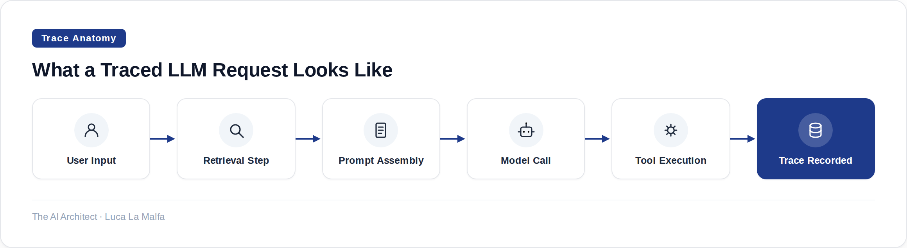

Without proper tracing, you're flying blind — here's how to instrument your LLM stack so failures become diagnosable.
October 20, 2026
Three weeks into a production deployment, a client called me. Their RAG pipeline was returning wrong answers on a specific category of questions — not always, not never, just enough to erode user trust. They had logs. They had error rates. What they didn't have was any visibility into what the model had actually received as context, what the retrieval step had pulled, how long each stage had taken, or whether the problem was in chunking, in embedding, or in the generation step itself. They were staring at outputs and guessing at causes. That's the default state for most LLM deployments, and it's a genuinely bad place to be.
LLM observability is the discipline of making your model pipeline inspectable after the fact — and sometimes in real time. It's not just logging the final response. It's capturing the full chain: the prompt that went in, the retrieved documents, the tool calls made, the token counts, the latency at each hop, and the model's intermediate reasoning if you're using something like chain-of-thought. Without this, debugging a multi-step agent is archaeology. With it, you can usually pinpoint a failure in minutes.

The core primitive in any observability system is the trace — a structured record of a single end-to-end request, composed of spans that represent individual steps. This is borrowed from distributed systems tracing (OpenTelemetry, Jaeger, Zipkin), and the mental model maps well to LLM pipelines. A span might be "retrieve documents," another might be "call GPT-4o," another might be "execute Python tool." Each span carries a start time, duration, inputs, outputs, and any metadata you choose to attach — model name, temperature, token usage, user ID. Stitched together, these spans give you the full execution tree of a request.
Where LLM observability diverges from classic APM is in what you need to capture. Latency and error rates matter, but so does the content. You need the actual prompt text, the actual completion, the retrieved chunks with their similarity scores. This creates a real tension: capturing all of that is expensive on storage, potentially sensitive under GDPR or similar frameworks, and can itself introduce latency if done naively. Every serious observability setup I've built has had to make explicit decisions about what to sample, what to redact, and where to store it. There's no free lunch — more visibility costs something.
For agents specifically, observability becomes non-negotiable rather than just nice-to-have. An agent that runs ten tool calls before producing an answer has ten places where something can go wrong silently. I've seen agents loop, call the wrong tool with subtly wrong arguments, retrieve stale data, and then produce a confident-sounding answer that's completely wrong — all without a single exception being raised. The only way to catch this is to have every tool call, every LLM invocation, and every routing decision recorded as a span with its inputs and outputs intact. Geoffrey Huntley's point about enforcing observability at the commit level via pre-commit hooks is worth taking seriously: if your agent framework makes it easy to bypass the tracing layer, someone will, and you'll lose the data exactly when you need it most.
Evaluation is the other reason to care about tracing beyond pure debugging. Once you have traces, you have a dataset. You can run evals over historical traces — checking whether answers were grounded in the retrieved context, whether tool calls were appropriate, whether latency SLAs were met. This feedback loop between production traces and offline evaluation is how you actually improve a system over time, rather than just hoping the next model version fixes things. Tracing is infrastructure for learning, not just for firefighting.
The redaction decision I make first
Before I instrument anything, I decide what can and cannot be stored in plaintext. In Swiss enterprise contexts especially, personally identifiable information in prompt logs is a compliance problem waiting to happen. My default: hash or strip user identifiers at the SDK level before the trace is written, keep the structural data (token counts, latency, tool names, retrieval scores), and store full prompt/completion text only in a separate store with appropriate access controls and a shorter retention window. It's more setup upfront, but it prevents a much worse conversation later.
langfuse/langfuse — Open-source LLM observability platform: tracing, evals, prompt management.
Inspired by Quoting Geoffrey Huntley (Simon Willison)